Eight problems.
Eight answers.
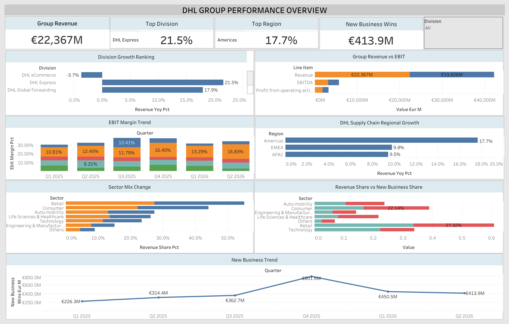
Logistics & Supply ChainDHL Group Q2 2026 Performance Analysis
Six quarters of DHL Group Statbook data structured in SQLite and visualized in an interactive Tableau dashboard, surfacing a 12.9% YoY revenue story.
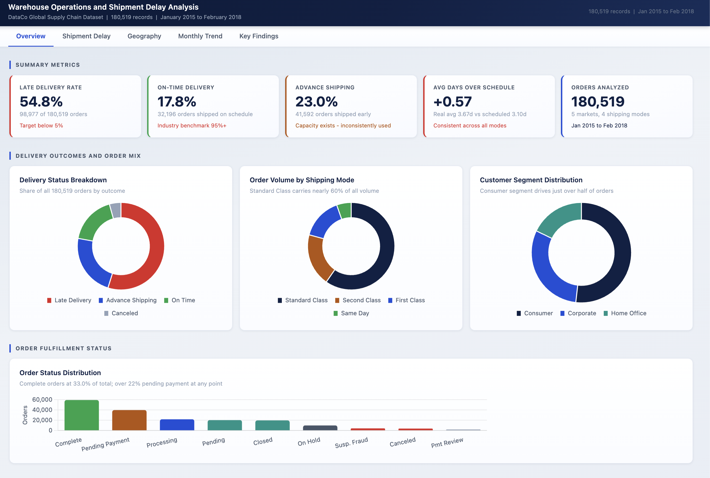
OperationsWarehouse Shipment Delay Analysis
180,519 orders across five markets and 38 months traced a 54.8% late-delivery rate back to an Order Management System, not warehouse execution.
 Finance
FinanceNobody had a real-time national fuel picture. So I built one.
A live AI-powered fuel pricing dashboard across all 51 states, pulling directly from AAA, surfaced a 53% YoY diesel spike hiding a logistics cost crisis.
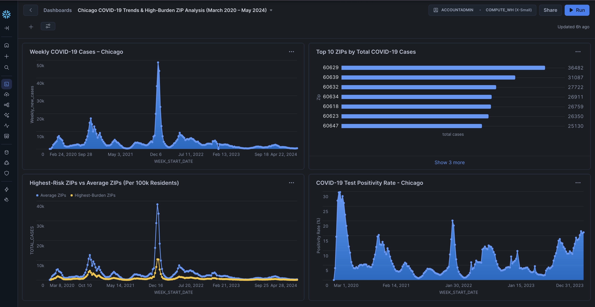
Public HealthCan you see a COVID surge coming before it arrives?
SQL infrastructure across 70+ Chicago ZIP codes found positivity-rate spikes preceded case surges by 7 to 14 days, a real early-warning window.
 Operations
OperationsThe bikes were there. They just weren't where people needed them.
Station-level demand analysis showed 6 PM commuter peaks, not weather, drove the shortages, pointing to timed rebalancing instead of broad network averages.
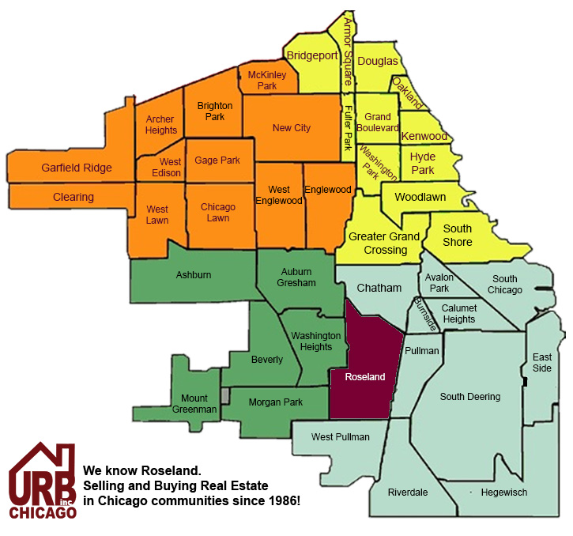
Urban StrategyThe Red Line is coming. Roseland isn't ready.
Demographic, income, and food-access data shaped a data-backed co-op grocery recommendation for a Chicago neighborhood the CTA extension is about to reach.
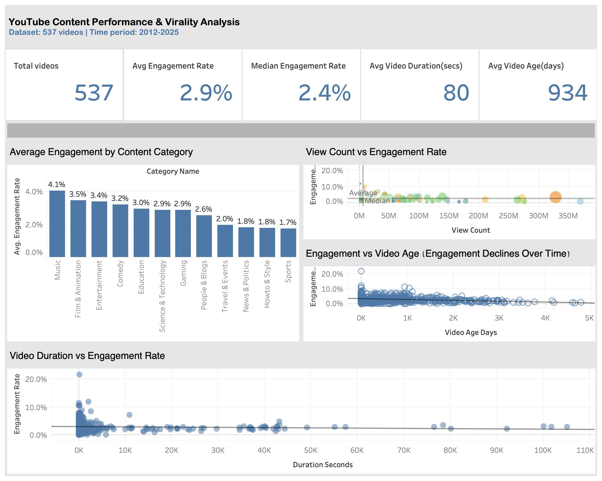
Content AnalyticsViews don't mean success. 537 videos prove it.
Thirteen years of YouTube data across 537 videos found the first 60 days, not subscriber count or total views, is the strongest predictor of long-term performance.
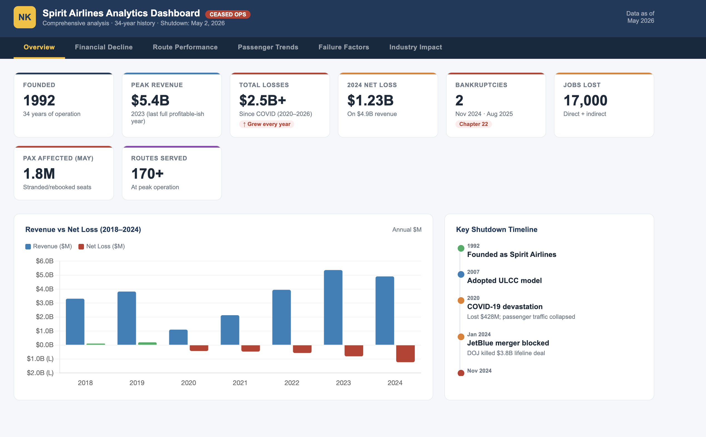
AviationSpirit Airlines: Ceased Operations Analysis
A 34-year financial autopsy tracing $2.5B+ in cumulative losses, the blocked JetBlue merger, and the cascade of failures that ended in full shutdown.
DHL Group Q2 2026 Performance Analysis
DHL Supply Chain's Q2 2026 results caught my attention, particularly its 12.9% YoY revenue growth and momentum in the Americas. I used DHL Group's official Statbook data covering six quarters, structured it in SQLite, analyzed and validated the figures with SQL, and built an interactive Tableau dashboard to explore the broader performance story.
Key findings: DHL Express led divisional growth at 21.5%, eCommerce recorded 9.5% organic growth despite a 3.7% reported decline, Group EBIT grew 30.0% compared with 12.8% revenue growth, and Technology represented 22.3% of Supply Chain new-business wins versus 11.5% of current revenue.
Warehouse Shipment Delay Analysis
54.8% of orders arrived late, and the easy explanation was warehouse execution. I pulled 180,519 orders across five markets and 38 months of order data, built an interactive dashboard to check the pattern by shipping mode, region, and time, and the data pointed somewhere else entirely.
The finding: Late rates stayed within 0.8 points of each other across all five markets (54.4% to 55.2%) and held flat for 38 straight months with no seasonal pattern. First Class alone ran 95.3% late, the mode promises 1-day delivery against a 2.0-day actual average. That kind of consistency does not come from warehouse execution. It points to an Order Management System committing delivery windows the fulfillment process was never able to hit.
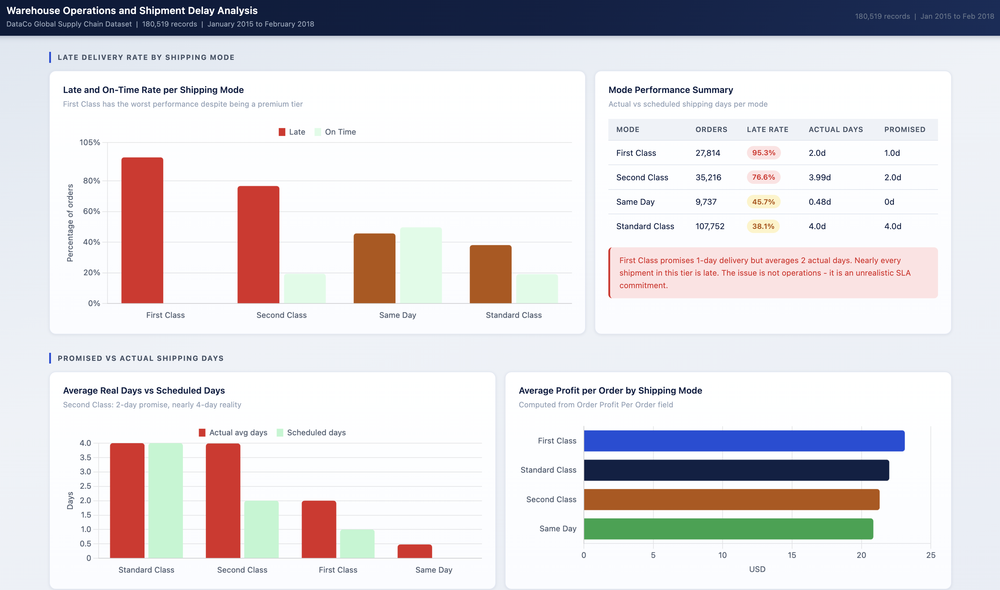
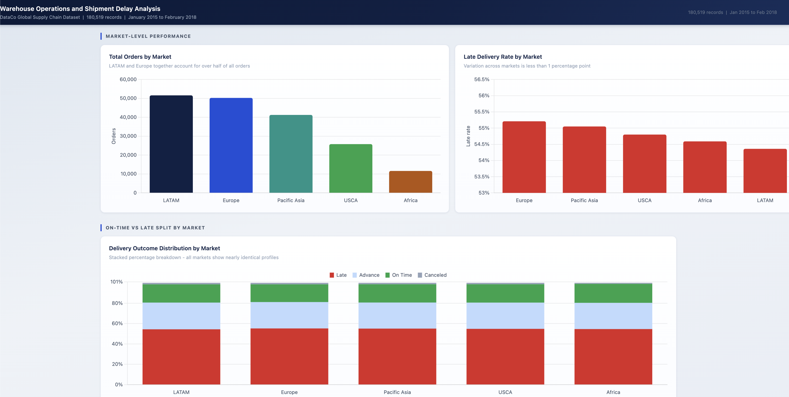
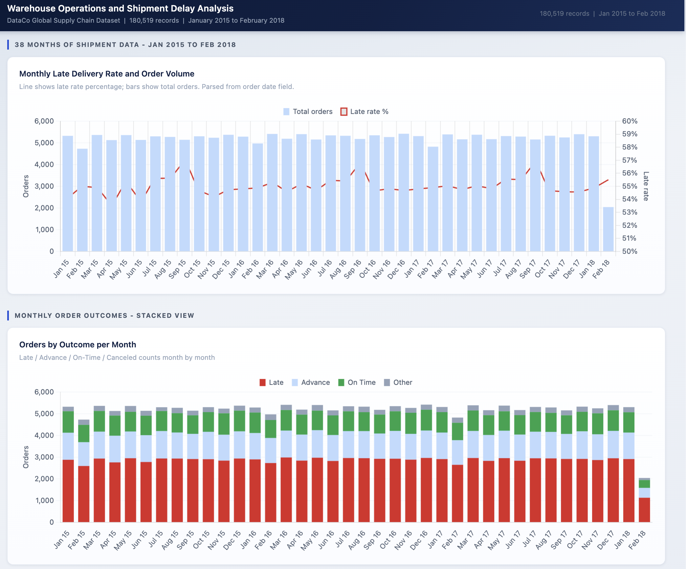
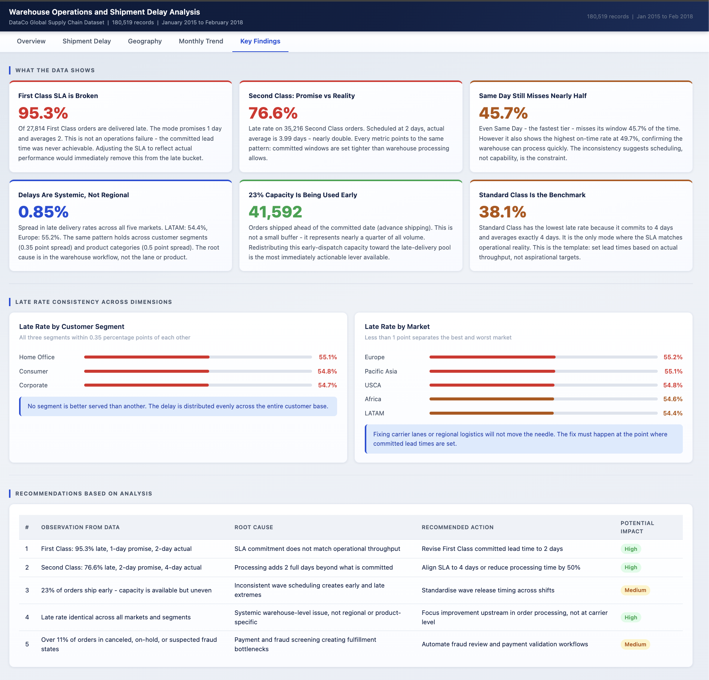
Nobody had a real-time national fuel picture. So I built one.
In 2024, understanding fuel pricing across all 51 states meant hours of manual exports and stale data. I used Claude as a live data layer , pulling directly from AAA in real time, no downloads, no manual cleaning. What I got back wasn't just a dataset. It was a business case hiding in plain sight.
The finding: Diesel had risen 53% year-over-year. That's not a gas price story , that's a logistics cost crisis. Supply chains priced on last year's assumptions were bleeding margin without knowing it.


Can you see a COVID surge coming before it arrives?
With 70+ ZIP codes and millions of case records in Snowflake, the question wasn't "what happened?" . it was "what's about to happen?" I built the SQL infrastructure to find out. The signal was already there. It just hadn't been extracted yet.
The edge: Positivity rate spikes preceded case surges by 7–14 days across high-risk ZIP codes , enough lead time to shift staffing, open overflow capacity, and intervene before the wave hit.
The bikes were there. They just weren't where people needed them.
Availability isn't the problem : redistribution is. By analyzing demand at the station level, a clear picture emerged: weather barely matters, weekends barely shift demand, but 6 PM is where everything breaks down. Commuters flood stations that weren't stocked for them.
The fix: Station-level rebalancing timed to evening commuter peaks , not broad network averages , reduces shortages at high-demand nodes and idle inventory at low-demand ones at the same time.
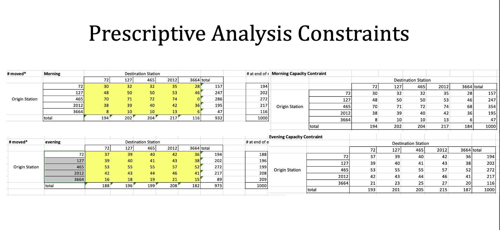
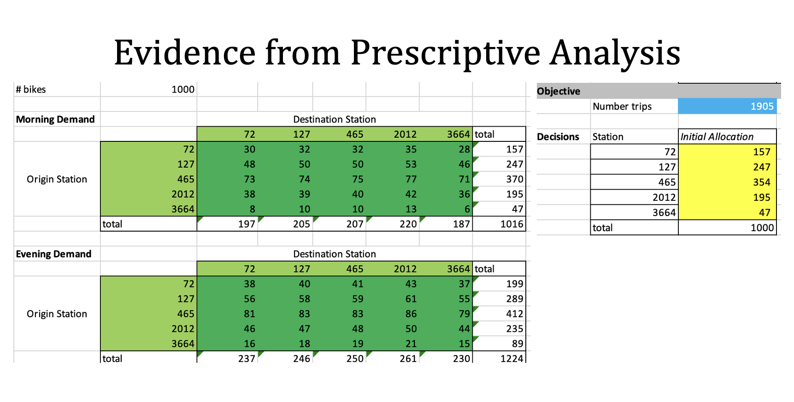
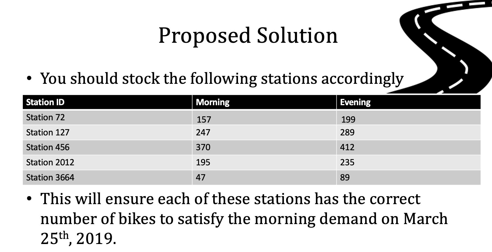
The Red Line is coming. Roseland isn't ready.
Transit access without economic access doesn't move communities forward. I used demographic, income, and food-access data to map exactly what Roseland was missing , and what the CTA extension created an opportunity to fix. The demand was clearly there. The question was which model could actually serve it.
The recommendation: A data-backed co-op grocery model : community ownership, site-selected on highest-need clusters , designed to serve both affordability and accessibility gaps in a neighborhood full-service retail had long ignored.
Views don't mean success. 537 videos prove it.
Thirteen years of YouTube data. 537 videos. Every platform metric you can name. The single strongest predictor of long-term performance isn't subscriber count, production budget, or total views , it's what happens in the first 60 days. That's the window most content teams aren't watching closely enough.
The counterintuitive finding: High-view videos consistently underperformed on engagement rate. Content that drove early interaction compounded into better long-term outcomes : a fundamentally different optimization target than most teams use.
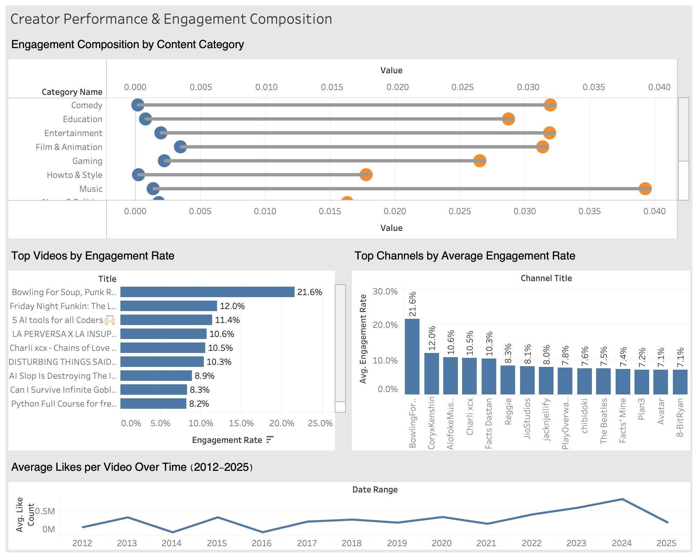
Spirit Airlines : Ceased Operations Analysis
A comprehensive 34-year autopsy of Spirit Airlines' collapse , from ULCC pioneer to double bankruptcy and full shutdown on May 2, 2026. Traced $2.5B+ in cumulative losses, the DOJ-blocked JetBlue merger, and the cascade of failures that stranded 1.8M passengers.
Key finding: COVID-19 devastation, an $8.1B debt load, and a blocked $3.8B lifeline left no recovery path. Post-shutdown, fares on Spirit routes rose 23% as Frontier absorbed 100+ routes overnight.
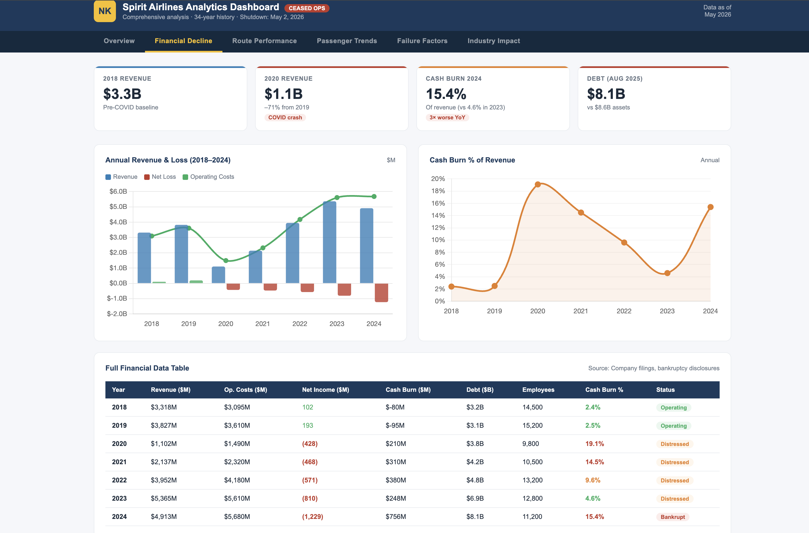
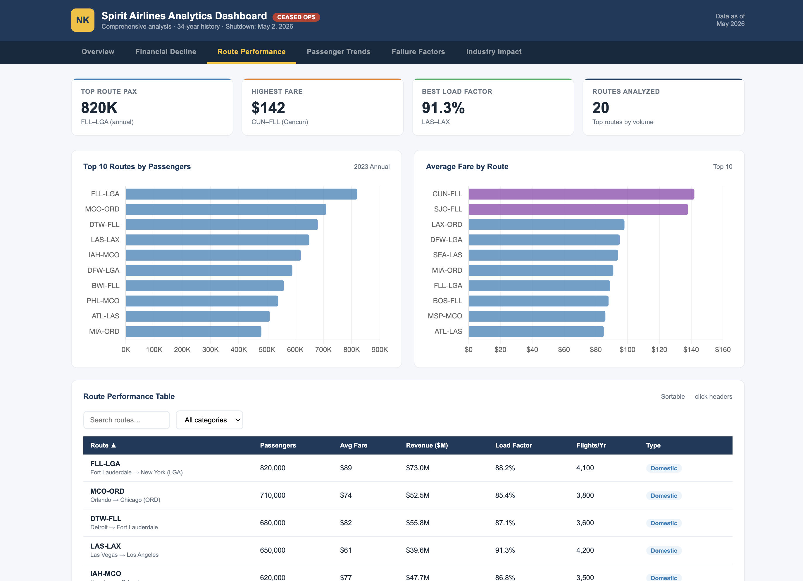
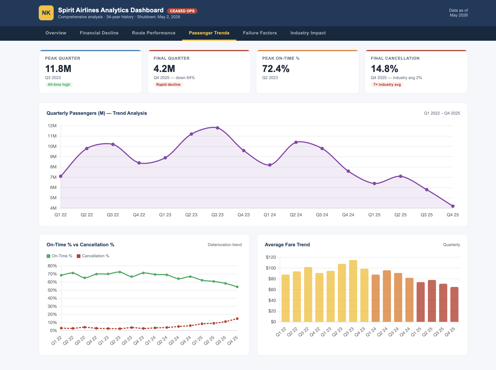
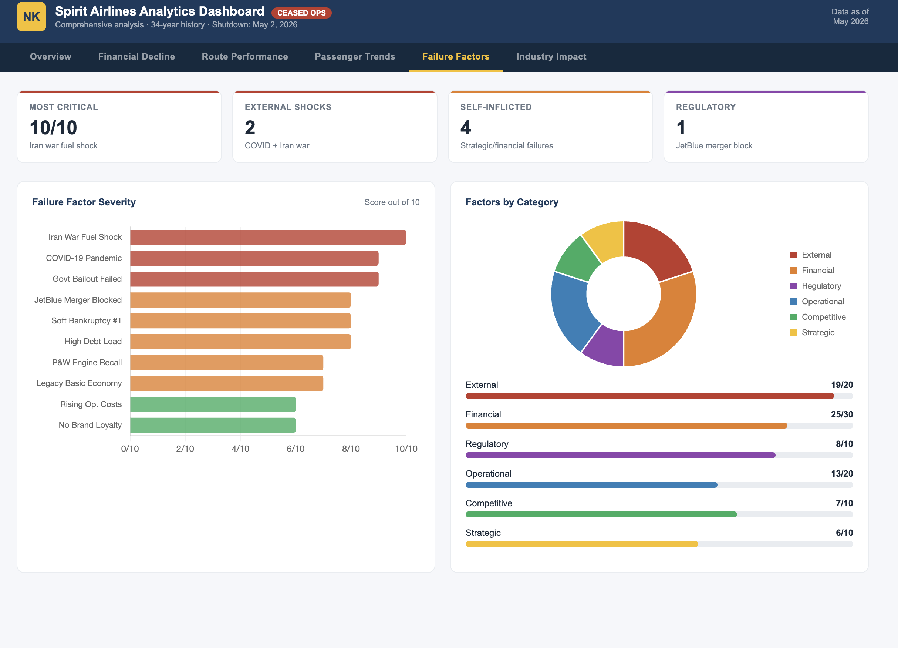
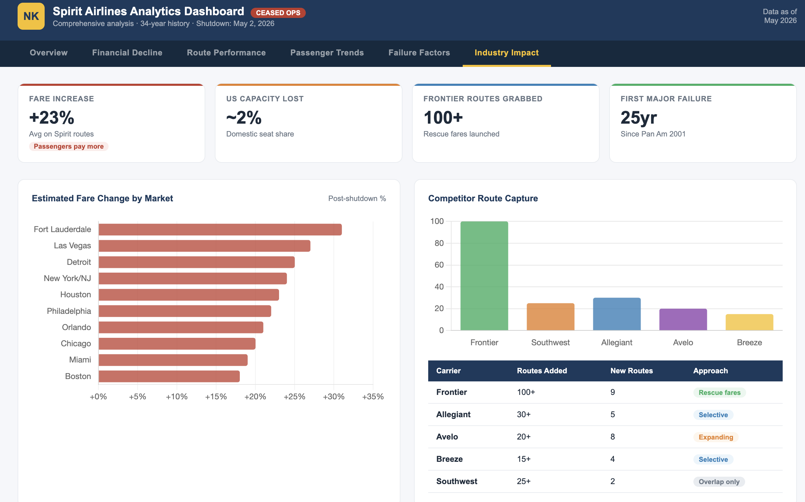